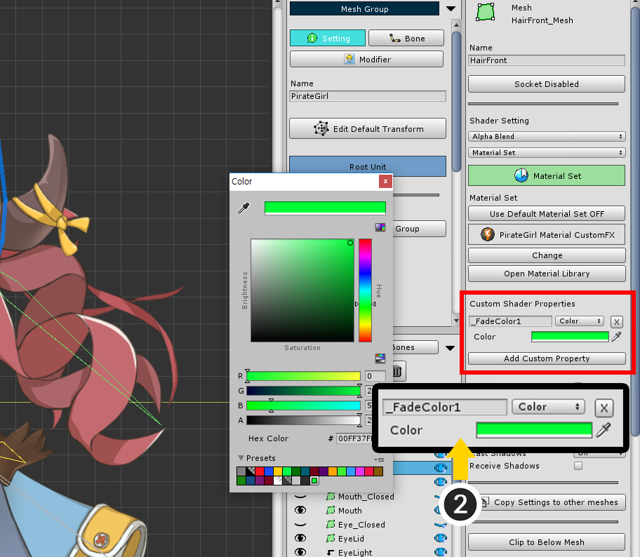

AnyPortrait > Manual > Material Library
Material Library
1.5.0
This applies from v1.1.7.The basic rendering goal of AnyPortrait is "to express the original color of the illustration without applying light".
However, depending on the project, the characters need to be affected by the light, and various effects implemented by the user-created shader may need to be implemented.
New features have been added to AnyPortrait v1.1.7 to meet users' needs.
You can set various materials by using "Material Library", and you can set the initial value of the material.
You can also easily apply a commonly used "Material Set" to a different character by setting it as a preset.
Create and apply a Material Set in Material Library
This is a Unity scene with Directional Light, Point Lights placed and Ambient Color brighter than black.
At this time, there is a problem that characters created in AnyPortrait in the basic way are rendered too brightly.
Previously, in these cases, you had to troubleshoot the problem by applying the Custom Shader to every mesh individually. (Related page)
Open the AnyPortrait editor.
(1) Select the Root Unit.
(2) Click the Material Library button added to the top of the editor.

"Material Library" window is opened.
Material Library is a feature that can create and modify "Material Set"s.
(You can find more information about Material Library interface at the bottom of this page.)
Different Shaders are applied to meshes of AnyPortrait according to the condition.
Therefore, you have to manage several shaders in one group, which is called "Material Set".
The conditions for which shader applies are:
- Gamma or Linear Color Space
- Clipping
- Blending type
And an Alpha Mask Shader for clipping meshes.

Material Library is structured as shown above.
(1) Material Sets : Material Sets stored in the current character are displayed, and there is a button to be able to create a new Material Set.
(2) Presets : Presets commonly shared for other characters are displayed. There are buttons to create a preset or to create presets from pre-provided packages.
(3) Material Set attributes : There are attributes of the selected Material Set. You can set the name, icon, shaders, and properties of materials.
(4) Material Set edit functions : It provides functions to synchronize the values by connecting with the Preset or duplicate it.

Currently there is only a default "Unlit" preset.
Let's install Material Set Presets provided in a package.
(1) Press the Unpack Advanced Presets button.
(2) When the package is installed, a message appears indicating that Material Library needs to be restarted.
Click the Okay button to exit Material Library, and then the package will be installed.
When the installation is finished, open Material Library again.

Various Material Set presets are now installed.

The buttons for selecting presets in v1.1.8 have changed.
(1) Select the Material Set preset you want to install.
(2) Press the Unpack Preset button to install the selected preset.
- For a description of the LWRP Unlit and LWRP 2D presets, see the Related page.
- For a description of the VR presets, see the Related page.
- For a description of the Keep Alpha presets, see the Related page.
- For a description of the URP presets, refer to the Related page.
In v1.3.5, the following presets have been added for compatibility and optimization.
- If you want to use URP in Unity 2021 or later, install the "URP (2021)" preset instead of the "URP" preset. (Related page)
- If you want to use the material merging function, install the "Mergeable" preset. If you want to merge materials in the URP environment, install the "URP (2021)" preset instead. (Related page)
Next, let's create a new Material Set.
(3) Press the Make Material Set button.
(4) Presets can be selected to make the Material Set easier. In this step, let's select the "Lit" preset.

A new Material Set is created and the attributes are automatically created based on the "Lit" preset.

This Material Set has been created, but not applied yet.
When the generated Lit Material Set becomes the default, it is actually applied when the bake is done.
(5) Press the Default Material button to set the Lit Material Set to default.

The AnyPortrait editor does not support material-dependent rendering.
Let's run Bake and see how it looks in Unity scene.
Open the Bake dialog and press the Bake button.

Now you can see the character that is rendered beautifully by various lights.
Render using Material Presets

In addition to "Lit" preset, various presets are provided.
Let's try to render using these materials one by one.
(1) Select the "Lit" Material Set created above.
(2) Press the Change button.
(3) You can select another Material Preset to synchronize. Now let's choose the "Bumped" preset.
(4) The message dialog appears that asks whether you want to change all the properties to be the same as the selected preset. Press the Okay button.

Attributes of the "Bumped" Material Set are changed.
If necessary, you can modify the name and icon of the Material Set.

"Bumped material" requires a Normal map (or Bump map).
You must enter a normal map in the properties of the material.
(5) When you scroll through the Material Set attributes area, there is "Material Properties" at the bottom. You need to assign the normal map to the "_BumpMap" property.
(6) The normal map is usually created with a blue texture and must be created manually by an external tool.
Note
This page does not describe how to make textures like Normal maps.
Search by keyword like "2D Normal Map", and various production methods will be introduced.

You can see rendering results that look convex and thick compared to Lit material.
Since most lighting requires normal vectors, all of the following materials are based on the Bumped material.

Now let's apply the "Bumped Specular" material.
You can select and apply the material in the same process as described above.
(1) Press the Change button.
(2) Select the "Bumped Specular" Preset.
(3) "_SpecularPower" and "_SpecularMap" properties are added to the material property items.
The "_SpecularPower" property is the square of the Specular's Shininess. If the number is large, a small, bright reflected light appears.
The "_SpecularMap" property is the texture to be used for the Specular calculation. The RGB channel of the texture refers to the color of the Specular to be applied as a "plus operation", and the Alpha channel means the parameter to be multiplied by _SpecularPower.

Now you can see that the material becomes brighter along the direction of light.
(In general, the specular intensity changes according to the direction of the light and the direction of the camera. However, because the character created by AnyPortrait is rendered by the billboard method, the effect of specular is not great.)

Let's apply "Bumped Specular Emission" material in the same way.
The feature of the emission material is that it adds the self-luminous effect.
(You can see brightly rendered metal parts of eyes, guns, and clothes.)
The following two properties are added to this material.
The "_EmissionMap" property is a texture with color (RGB) information that is self-illuminating. Rendering is applied as a "plus operation".
The "_EmissionColor" property is a color parameter that is multiplied by the color of "_EmissionMap".

The "Bumped Rimlight" material also shows nice rendering results.
Rim Light is a technique for expressing reflected light from the rear.
The following properties are added.
"_RimPower" is a property that sets the size of the rim light area. Because it is applied by square operation, the smaller the value, the wider it appears.
"_RimColor" is the color of the rim light (RGB), and that is applied by the plus operation.

The "Bumped Ramp" material is an interesting material showing the most extraordinary results.
With this material, the user can set how to be shaded using a Gradient Map.
Applies a gradient map to the "_RampMap" property.
Since this texture does not need to be specified for each image, you can see that the texture property is "Common Texture".
Using "Bumped Ramp" material, you can create quite artificial and impressive rendering results.
Create a Material Set with Custom Shaders
You can create a material by applying a customized shader.
This page describes how to put a simple effect shader into a Material Set.
(The shader asset described here is not included in the AnyPortrait package.)

Let's create a new Material Set by cloning from an existing Material Set.
(1) Select the Material Set and click the Duplicate button to duplicate it.
(2) The new Material Set duplicated is added to the list.

(3) Set name and icon.

Apply the created shader to the Material Set.
Depending on the condition, you need to create and apply a total of 16 shaders each. But, if it is an effect shader, you do not have to make it for every case.
(4) Apply the created shader to the most basic "Gamma Color Space / Basic Rendering / Alpha Blend".
The shader used on this page is written as follows:
(This is a shader that some code is added to the "Bumped Ramp" shader provided as a preset.)
Shader "CustomShader/Character FX"
{
Properties
{
_Color("2X Color (RGBA Mul)", Color) = (0.5, 0.5, 0.5, 1.0)
_MainTex("Main Texture (RGBA)", 2D) = "white" {}
_BumpMap("Bump Texture (Normalmap)", 2D) = "bump" {}
_RampMap("Ramp Gradient Map (RGB)", 2D) = "white" {}
_NoiseMap("Gray Noise Map (Gray)", 2D) = "white" {}
_FadeValue("Fade Value (0~1)", Float) = 0
_FadeColor1("Fade Color 1 (RGB)", Color) = (0, 0, 0, 1)
_FadeColor2("Fade Color 2 (RGB)", Color) = (1, 1, 0, 1)
}
SubShader
{
Tags{ "RenderType" = "Transparent" "Queue" = "Transparent" "PreviewType" = "Plane" }
Blend SrcAlpha OneMinusSrcAlpha
LOD 200
CGPROGRAM
#pragma surface surf SimpleColor alpha
#pragma target 3.0
half4 _Color;
sampler2D _MainTex;
sampler2D _BumpMap;
sampler2D _RampMap;
// Custom Code
//--------------------------------
sampler2D _NoiseMap;
float _FadeValue;
half4 _FadeColor1;
half4 _FadeColor2;
//--------------------------------
struct Input
{
float2 uv_MainTex;
float2 uv_BumpMap;
float4 color : COLOR;
};
half4 LightingSimpleColor(SurfaceOutput s, half3 lightDir, half atten)
{
half4 c;
half nl = max(0, dot(s.Normal, lightDir));
half halfDiff = (nl * 0.5f) + 0.5f;
half3 rampColor = tex2D(_RampMap, float2(halfDiff, 0.5f)).rgb;
c.rgb = saturate(s.Albedo * _LightColor0.rgb * (rampColor * atten));
c.rgb + s.Emission;
c.a = s.Alpha;
return c;
}
void surf(Input IN, inout SurfaceOutput o)
{
half4 c = tex2D(_MainTex, IN.uv_MainTex);
c.rgb *= _Color.rgb * 2.0f;
o.Alpha = c.a * _Color.a;
o.Albedo = c.rgb;
o.Normal = UnpackNormal(tex2D(_BumpMap, IN.uv_BumpMap));
// Custom Code
//---------------------------------------------------
o.Emission = half4(0, 0, 0, 0);
half noise = tex2D(_NoiseMap, IN.uv_MainTex).r;
if (noise < _FadeValue - 0.03f)
{
o.Alpha = 0.0f;
}
half smoothFade = (noise - _FadeValue) / 0.6f;
if (noise < _FadeValue)
{
o.Emission = _FadeColor2.rgb;
}
else if (noise < _FadeValue + 0.6f)
{
o.Albedo = (o.Albedo * _FadeColor1.rgb) * (1.0f - smoothFade) + o.Albedo * smoothFade;
}
//---------------------------------------------------
}
ENDCG
}
}
Let's make the properties for this shader code.

(5) Press the Add Property button.
(6) You can see that a new property is added.
(7) Set the property name to "_NoiseMap" and change it to "Texture" type.

(8) Since this texture should be applied in common regardless of image, change it to "Common Texture" method.
(9) Set the Noise texture created for the effect.

(10) In the same way, add "_FloatValue" of Float type, "_FadeColor1" and "_FadeColor2" property of Color type.
Set the appropriate values for the added properties.
Let's apply this Material Set to render the character.
(11) Change the Default Material setting of the material to ON and execute the Bake.
You can see the effect of the disappearing or appearing character.
You can use a script to control the "_FadeValue" to create an animated effect.
See the example below for how to implement it.
The example below works as follows:
- When A key or S key is pressed, the "fadeValue" variable is increased or decreased.
- Use the SetMeshCustomFloatAll function to update the material's "_FadeValue" property with the fadeValue value.
(For more information about the function, see the related page.)
using UnityEngine;
using AnyPortrait;
public class CharacterFadeTester : MonoBehaviour
{
public apPortrait portrait;
public float fadeValue = 0.5f;
void Update ()
{
if ( Input.GetKey(KeyCode.A) )
{
fadeValue -= Time.deltaTime * 0.5f;
portrait.SetMeshCustomFloatAll(fadeValue, "_FadeValue");
}
if ( Input.GetKey(KeyCode.S) )
{
fadeValue += Time.deltaTime * 0.5f;
portrait.SetMeshCustomFloatAll(fadeValue, "_FadeValue");
}
}
}
All materials described on this page are shown in the video.
In addition, the textures described on this page are shown below.

Save as a preset

If you make the Material Set as a preset, you can quickly apply the Material Set to other characters.
(1) Select the Material Set you want to save as preset.
(2) Press the Register as a Preset button.
(3) You can see that the Material Set is copied and registered as a preset.
Apply a different Material Set to only some meshes
You can select a mesh to apply a Material Set other than the default.
(1) Select the Mesh Group.
(2) Select the Setting tab.
(3) Select the Mesh.

(1) Press the Use Default Material Set button to change to the OFF state.
(2) Press the Change button.
(3) Select the Material Set you want to apply and press the Select button.
If you set up this step, the Material Set will be applied.
If you want to apply different properties of the Material Set to this mesh, you can do the following steps.

(1) Click the Add Custom Property button.
A new custom property is added.
This property applies to Unity scenes, regardless of the Material Set or Custom Shader settings.
(It takes precedence over the property set of the Material Set.)

(2) Set the property name, type, and value.
Here, we set the Color type "_FadeColor1" as in the previous setting.
Add the "_FadeColor2" property in the same way.
It will be rendered differently because we set it to a different color than the setting of the Material Set.
Perhaps you need to apply the same material settings to other meshes.
Check out the following explanation.

(1) Press the Copy Settings to other meshes button.
This function copies the settings of the mesh to other meshes and allows you to selectively copy various settings, including material settings.
(2) Select meshes to copy settings.
(3) Check Material Set and Custom Material Properties to copy the settings which were described this page.
(4) Press the Apply button.

When you execute Bake and check the rendering results in the Unity scene, you can see that only the selected meshes are applied differently.
Material Library interface

1. The list of Material Sets
: There are Material Sets that can be applied to characters and a Make Material Set button that can be used to create a Material Set.
2. The list of Presets
: There are Material Set Presets. There are buttons to create presets.
- Make Material Preset : Create a new preset.
- Unpack Advanced Presets : Add presets by installing the package containing the various materials described above.
- Unpack LWRP Preset : Install the package containing one Material Set for Lightweight Render Pipeline (LWRP).
3. Material Set Editing Functions
: Functions to edit the selected Material Set.
- Connected Preset and Change, Restore: If this Material Set is not a preset, it can be linked with Preset. You can click the Change button to select another preset to connect, or you can press the Restore button to synchronize to the same values as the preset.
- Duplicate: Duplicates the selected Material Set.
- Register as a Preset : Register this Material Set as a preset.
- Remove : Remove this Material Set. The default "Unlit" preset can not be removed.
1. Name, Icon, and Ambient Color option
: These are name and icon type of the material set. If you check that this Material Set requires "Black Ambient Color", a message will appear depending on the Ambient color when you run the bake.
2. Image of the icon
3. Default Material option
: If you set a Material Set as the default, this will automatically be applied to all meshes that do not have the other settings.
4. Shaders
: Set which shader assets to apply in detail based on color space, clipping, and blending type.
5. Reserved Shader Properties
: The four properties used by AnyPortrait. These properties are not user controlled.
6. Texture Property different for each image
: You can set each texture for each image. You can change it by pressing the Texture per Image button.
7. Common Texture Property
: Specifies a texture as property, regardless of the image. You can change it by pressing the Common Texture button.
8. Float, Int, Vector, Color Properties
: These are non-texture type properties. From the left are the following elements:
- Enable Checkbox: Turning off this check box does not apply to Bake.
- Name: The name of the property, the same name must be defined in the shader.
- Type: The type of the property. Float, Int, Vector, Color, Texture types are supported.
- Value: The value of the property.
- Remove button : Remove the property.
9. Add Property

Solve issue with missing shader assets in presets
1.5.0
If you move assets within a project to a different path, a problem may occur where shader assets from material presets are missing.
We introduce a feature to easily solve this problem.

The screen above shows the state after the shader assets of the installed material preset have been moved to another path within the project.
(1) Let’s select a preset.
(2) The shader assets were not deleted, but the shader assets were missing as the path changed.

(1) Press the Find and assign missing shaders button.
(2) A message will appear asking you to reassign the asset after searching by file name. Click the Okay button.

You can see that the missing shader assets have been properly assigned again.